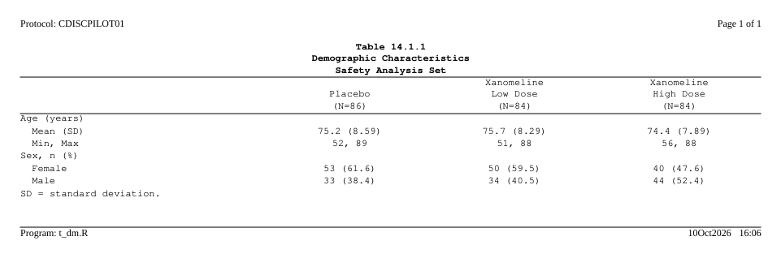

rtfreporter writes clinical tables, listings and figures (TFLs) as RTF files – running header and footer, page numbers, titles and footnotes included – using base R alone.
A 30-second example
library(rtfreporter)
# A demographics summary: the CDISC pilot study's numbers, typed in
dm <- data.frame(
row = c("Age (years)", " Mean (SD)", " Min, Max",
"Sex, n (%)", " Female", " Male"),
pbo = c("", "75.2 (8.59)", "52, 89", "", "53 (61.6)", "33 (38.4)"),
low = c("", "75.7 (8.29)", "51, 88", "", "50 (59.5)", "34 (40.5)"),
high = c("", "74.4 (7.89)", "56, 88", "", "40 (47.6)", "44 (52.4)"))
doc <- rtf_document() |>
rtf_section(secinfo = list(
header = rtf_header(list(
c(l = "Protocol: CDISCPILOT01", r = "Page {PAGE} of {TOTAL_PAGES}"))),
footer = rtf_footer(c(l = "Program: {PROGRAM}", r = "{DATETIME}")))) |>
rtf_tables(dm,
col_header = rtf_col_header(c("", "Placebo\n(N=86)",
"Xanomeline\nLow Dose\n(N=84)",
"Xanomeline\nHigh Dose\n(N=84)")),
col_rel_width = c(3, 2, 2, 2),
titles = list(c("Table 14.1.1", "Demographic Characteristics",
"Safety Analysis Set")),
footnotes = list("SD = standard deviation."))
generate_rtfreport(doc, "t_dm.rtf", program = "t_dm.R")

The t_dm.rtf written by the code above, opened in LibreOffice (the empty middle of the page is cut out of the picture). More tables, listings and figures are in the Gallery.
Installation
The package is not on CRAN yet. Install from GitHub:
# install.packages("remotes")
# Latest release (v0.8.2)
remotes::install_github("ichirio/rtfreporter@v0.8.2")
# Development version (latest main)
remotes::install_github("ichirio/rtfreporter")Why rtfreporter?
From the analysis results to the RTF page, with one vocabulary. The recommended way to make a table is from an analysis results dataset (ARD) built with cards / cardx: the statistics stay in the ARD, and a short plan says how they are laid out – which key goes across and which down, how a mean and an SD become one cell, what the rows are called, what the header says and where the pages break. The column header’s (N=xx) is read from the same ARD, so the header and the numbers under it agree by construction.
Bring your own table, too. A table already built with gt, gtsummary, rtables / tern, tfrmt, flextable, huxtable – or a plain data frame – goes in through as_rtftables(), with its labels, spanning headers and footnotes.
Either way the document around it is the same: running headers and footers with page numbers, the program name and the run date, titles and footnotes, listings and figures, and the finished files joined into one deliverable.
We deliberately keep the scope small. rtfreporter is not a general-purpose RTF library; it is a focused tool for the one clinical TFL style we want to ship. That scope cap is the point — it keeps the package small enough to read end-to-end, thorough to test, and realistic to maintain. If the supported layout matches your team’s house style, you get publication-ready deliverables with almost no configuration.
The recommended path: a table from an ARD
The example above typed its numbers in. In a real program they come from an analysis results dataset (ARD) built with cards, and a short plan lays them out – the column header’s (N=xx) is read from the same ARD:
library(rtfreporter)
library(cards)
# 1. The statistics: an ARD, by arm (ard_stack() also counts each arm's N)
adsl <- ADSL
adsl$ARM <- factor(adsl$ARM, levels = c("Placebo", "Xanomeline Low Dose",
"Xanomeline High Dose"))
ard <- ard_stack(
adsl, .by = ARM,
ard_summary(variables = AGE),
ard_tabulate(variables = c(AGEGR1, SEX)))
# 2. The plan: roles first, then one verb per declaration
plan <- ard |>
normalize_ard() |>
table_plan(cols = "ARM", rows = c(group = "variable")) |>
plan_cells(
continuous = c("n" = "{N:.0f}",
"Mean (SD)" = "{mean:.1f} ({sd:.2f})",
"Min, Max" = "{min:.0f}, {max:.0f}"),
categorical = "{n:.0f} ({p:.1f%})",
notes = FALSE) |>
plan_labels(c(AGE = "Age (years)", AGEGR1 = "Age group, n (%)",
SEX = "Sex, n (%)")) |>
plan_levels(AGEGR1 = c("<65", "65-80", ">80")) |>
plan_stub(name = "row_label") |>
plan_blanks(where = "between_groups", first = TRUE) |>
plan_style(border = "tfl", align_count_pct = TRUE) |>
plan_col_header(values = list(n = TRUE), rtf_col_header(
c("", "{col}"),
c("Characteristic", "(N={n})")))
# 3. The document: running header and footer, the plan, the file
doc <- rtf_document(tokens = list(STUDY = "CDISCPILOT01")) |>
rtf_section(secinfo = list(
header = rtf_header(list(
c(l = "Protocol: {STUDY}", r = "Page {PAGE} of {TOTAL_PAGES}"),
c(c = "Table 14.1.1 Demographic Characteristics"),
c(c = "Safety Analysis Set"))),
footer = rtf_footer(c(l = "Program: {PROGRAM}", r = "{DATETIME}")))) |>
rtf_tables(plan)
generate_rtfreport(doc, "t_dm.rtf", program = "t_dm.R", overwrite = TRUE)

A demographics table made this way – the full example, with quartiles and race, is in Tables from an ARD.
Get started walks through these three steps.
Writing rtfreporter code with an AI assistant
rtfreporter is too new to be in any chat model’s training data: asked for rtfreporter code it reaches for r2rtf’s verbs or invents arguments, and flags neither as a guess. Give it the facts first.
The manuals ship with the package, so the one you attach describes the version you actually have:
rtfreporter_ai_manual() # path to the user manual
rtfreporter_ai_manual(file = "manual.md") # copy it out, ready to attachOr download it – AI user manual (v0.8.2) – one self-contained file sized for a single chat session. Attach it at the start of the session and say “use this manual”. ai/rtfreporter-ai-user-manual.md always resolves to the newest release, so it is safe to bookmark; the development copy is published beside it under its own version.
It holds the whole workflow, the program structure a report program should have, every as_rtftables() argument, the four clinical table shapes, headers and page tokens, listings, figures, borders, and the complete list of exported functions. Every example in it is executed against the package and its function list is checked against NAMESPACE, both by CI – so a manual that drifts from the API fails the build rather than misleading you.
Working on rtfreporter rather than with it? See Developing with an AI assistant, which covers the companion developer manual (rtfreporter_ai_manual("dev")).
A focused tool, on purpose
What the small scope buys you:
- One output style, opinionated defaults. No theme zoo, no “render anything” pipeline. The defaults match the conventional clinical TFL look out of the box; you do not have to assemble it.
-
Only the features TFL → RTF needs. Multi-section headers / footers, spanning column headers, automatic page-number fields (
{AUTO_PAGE}/{AUTO_TOTAL_PAGES}), embedded figures, and per-document concatenation viaassemble_rtf(). If a feature would not appear on a real clinical TFL, we resist adding it. - Maintainability over breadth. Saying no to scope creep is what keeps the package small, the tests fast, and the API stable.
-
Composable pipe API.
rtf_document() |> rtf_section() |> rtf_tables() |> generate_rtfreport()— the same vocabulary every time, so building a 50-TFL deliverable is a loop.
If your deliverables need a substantially different layout, another tool may serve you better — and that trade-off is intentional. We would rather do one well-defined style really well than do everything passably. You are warmly welcome to use rtfreporter for the styles it supports.
Bring your own table tool
The clinical-table ecosystem has several excellent builders — tfrmt, gtsummary, rtables / tern, gt, flextable and huxtable — and, honestly, no single de-facto standard has emerged yet. rtfreporter does not ask you to pick one, to switch, or to re-state your table in yet another vocabulary. Whatever your team already uses to compute and format the numbers, as_rtftables() reads that object — its column labels, alignment, spanning headers, titles, footnotes and per-cell styling — and carries the metadata through to RTF.
And even if you use a tool we do not read directly, you are still covered: convert its result to a plain data.frame / tibble and rtfreporter lays it out just the same. A bare data.frame carries no display metadata, so you simply re-specify what you want — column headers, alignment, and so on — on rtf_tables() / rtftable() yourself.
The 30-second example at the top of this page is exactly that: a data frame, with its column header given to rtf_tables().
For worked, tool-by-tool comparisons see the same report, every framework articles — Demographics and Adverse events — plus Pharmaverse example tables to RTF.
Why RTF?
RTF is an old format, and we are perfectly aware of that. Producing .docx directly, or rendering straight to PDF, is entirely possible and in some respects more modern. We chose RTF on purpose, for the most old-fashioned of reasons: it is the simplest thing that fully meets the need.
For clinical deliverables the workflow we care about is RTF → (optional post-processing) → PDF, and that route is still genuinely useful today:
- Simple grammar. RTF is plain text with a small, well-understood command vocabulary. That keeps the renderer small and auditable — which matters in a regulated setting.
- Easy to patch when you must. Because the output is just text, a last-minute correction can be made by hand or by a small script, without round-tripping through a binary editor.
- Universally openable. Every word processor opens RTF and exports it to PDF, so the final step fits whatever your organisation already uses.
A PDF-first or DOCX-first toolkit could do the same job, perhaps more elegantly or with more features. But for our needs — which are modest, specific, and well-defined — RTF remains the easiest path that is necessary and sufficient. Simplicity, here, is the feature.
Documentation
The full pkgdown site is at https://ichirio.github.io/rtfreporter/:
- Gallery — tables, a listing and figures from the CDISC pilot data, each with the code that wrote it
-
Get started — an ARD, a plan, and the RTF file (
vignette("rtfreporter")) -
Tables from an ARD (recommended) — cards / cardx to RTF with a plan, the plan verbs and from
as_rtftables()to a plan -
Bring your own table — gt / gtsummary / rtables / tfrmt / flextable / huxtable objects and data frames through
as_rtftables(), pagination, and the same report, every framework articles (Demographics, Adverse events) - Listings — with a plan or from source data, including the column-width estimator and the wrapping rule
- Figures — a plot object to a page
- Assembling a deliverable — headers, footers and tokens, borders and rules, and joining files with a table of contents
- External API spec — the public API surface
Status
rtfreporter is in active pre-1.0 development and carries the lifecycle: experimental badge; the API may still change in backward-incompatible ways before v1.0.0.
-
Latest release:
v0.8.2(2026-09-30) – installable from GitHub (remotes::install_github("ichirio/rtfreporter@v0.8.2")); not yet on CRAN. Tables from a cards / cardx ARD:normalize_ard()/widen_ard()and the plan engine (table_plan()and theplan_*()verbs), adopted in the pre-CRAN API review; plus two fixes. SeeNEWS.mdfor the full release history. -
Development version on
main:0.8.2.9000. rtfreporter follows the standard R versioning scheme – a release isX.Y.Z, development isX.Y.Z.9000, and the three-component part always names the last release. An ordinary pull request leavesDESCRIPTIONalone unless the change is one somebody needs to name; changingX,YorZis a deliberate, labelled release action, enforced by theversion-guardCI.
See NEWS.md for the user-facing changelog and CHANGELOG.md for detailed per-version notes.
Citation
If rtfreporter helps your work, please cite it:
citation("rtfreporter")If the numbers in your tables come from a cards / cardx ARD, please cite those packages too (citation("cards"), citation("cardx")): they compute the statistics; rtfreporter only lays them out.
Acknowledgements
rtfreporter stands on the work of many others, and we are grateful to their authors.
-
cards and cardx — the analysis results data (ARD) that
normalize_ard()and theplan_*()verbs read are their design, an outcome of the pharmaverse community’s work on analysis results data. -
The table builders
as_rtftables()reads — gt, gtsummary, tfrmt, rtables / rlistings / tern, flextable and huxtable. rtfreporter reads the objects they build; the tables themselves are their work. - pharmaverseadam and the pharmaverse examples — the ADaM data (from the CDISC pilot study) and the example tables behind many of our examples and articles.
rtfreporter is an independent project and is not affiliated with, or endorsed by, the authors of these packages.
Contributing & bug reports
Issues and pull requests are very welcome at https://github.com/ichirio/rtfreporter. Please read CONTRIBUTING.md and the code of conduct first.
License
Apache License 2.0 © 2026 Yoichi Masui. See LICENSE.md.